Import Data
Objective
This module explains how to import external data into CE Express and how imported data becomes part of the project environment. It covers the import of network objects from CSV files and antenna patterns from external files, as well as the use of mapping templates to ensure consistency and repeatability.
By the end of this exercise, participants will be able to: - Import network objects using CSV files - Map external data fields to CE Express object attributes - Create and reuse import mapping templates - Import antenna pattern files into the CE Express database - Verify and review imported data within the workspace
Understanding Data Import in CE Express
Data import is a key capability in CE Express, allowing users to bring information from external sources into a workspace. Imported data may originate from: - External planning tools - Inventory systems - Field surveys - Desktop-based CE projects
CE Express supports structured import workflows to ensure that imported data is: - Correctly mapped to internal object models - Consistent across multiple imports - Easy to review and validate after import
Initial Data and Prerequisites
This exercise assumes: - A prepared workspace created in previous exercises - Prepared geodata loaded in the workspace - Access to import files stored locally on the computer
Exercise
Step 1 – Open the Workspace
- Open the CE Express application: https://cecom2.cellular-expert.com/ce_express/
- From the workspace list, select the workspace used in the previous exercise.

Step 2 – Importing Network Objects (Cells and Sites)
Purpose of Network Object Import
Importing network objects allows users to rapidly populate a workspace with sites and cells instead of creating them manually. This approach is especially useful when working with existing datasets or migrating data between systems.
Opening the Import Tool
- Open the Features tool.
- Click Import Features.
- Select Cells.
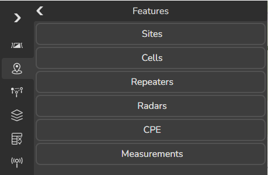
The Import dialog opens on the right side of the screen.
Loading the CSV File
- Open Windows File Explorer.
- Navigate to: C:\CE_Course\ImportingData\Network
- Select the file Cells_CE_Express.csv.
- Drag and drop the file into the Import dialog.
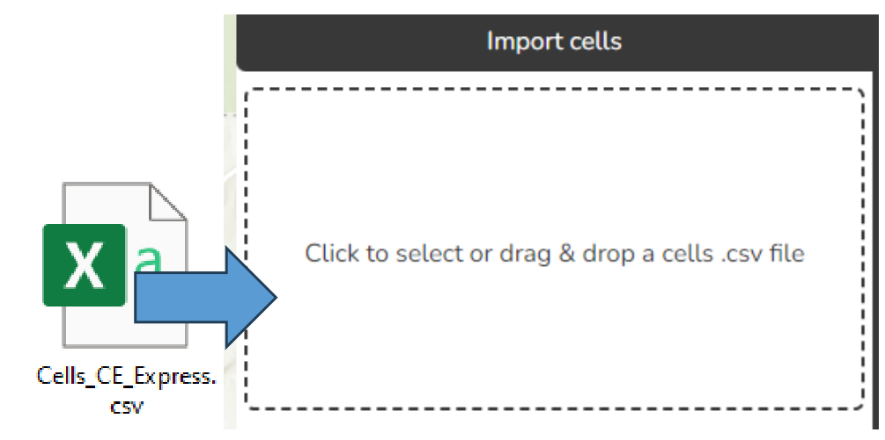
The CSV file is uploaded and ready for mapping.
Defining Import Options
Enable the following options: - Create Sites – automatically creates site objects based on site-related fields - Use Mapping – allows explicit mapping between CSV fields and CE Express attributes
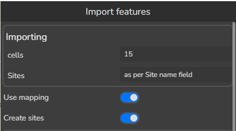
These options ensure that both sites and cells are created correctly during import.
Mapping CSV Fields to CE Express Attributes
Mapping defines how columns in the CSV file are translated into CE Express object parameters.
For each attribute, define the following mappings:
| CE Express | CSV file | Fill |
|---|---|---|
| Cell name | Cell Name | Leave empty |
| X | longitude | Leave empty |
| Y | latitude | Leave empty |
| Azimuth | Azimuth | Leave empty |
| Site name | Tower Name | Leave empty |
| Height | Height Above Ground | Leave empty |
| Downtilt | Tilt | Leave empty |
| El. Downtilt | Leave empty | 0 |
| Frequency | Frequency | Leave empty |
| Power | Cell Power | Leave empty |
| Misc loss, dB | Leave empty | 0 |
| Bandwidth | Bandwidth | Leave empty |
| Noise figure | Leave empty | 6 |
| Downlink duplex factor | Leave empty | 0.6 |
| Subcarrier spacing | Leave empty | 30 |
| TX MIMO | TxMIMO | Leave empty |
| RX MIMO | RxMIMO | Leave empty |
| Active antenna effect | Leave empty | 6 |
| Cell load, % | Leave empty | 30 |
| Color index | Leave empty | Leave empty |
| Technology | Tech | Leave empty |
| Prediction model ID | Leave empty | 3 |
| Prediction model configuration ID | Leave empty | 4 |
| Frequency group | frequency_group | Leave empty |
| antenna_id | Leave empty | 515 |
| carriers | Leave empty | [] |
| site_id | Leave empty | Leave empty |
| duplex_mode | Duplex | Leave empty |
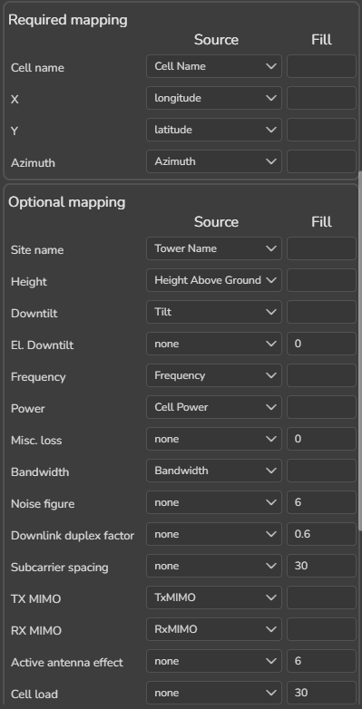
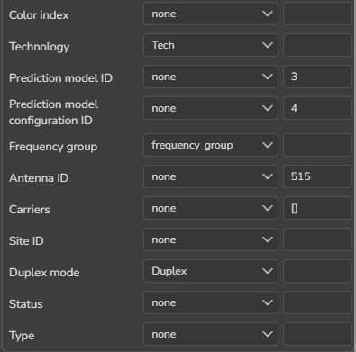
Saving a Mapping Template
Before importing, save the mapping configuration:
- In Mapping presets, click + New mapping preset.
- Enter the template name: Import template
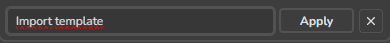
- Click Apply to save the preset.
Using mapping templates ensures consistency and avoids repeating manual configuration for future imports.
Importing the Data
- Click Accept to start the import.
- Wait until the import process completes.
- Close the Import tool.
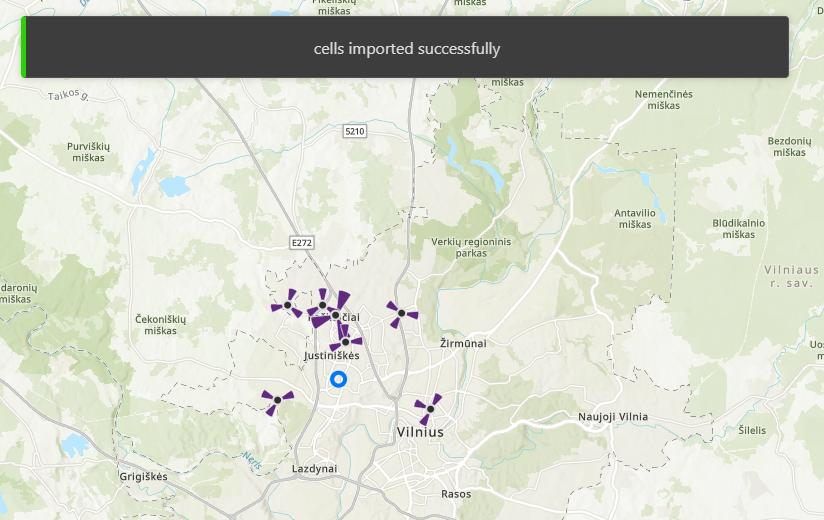
Verifying Imported Objects
- Ensure the Features tool is active.
- Click once on the map to select imported objects.
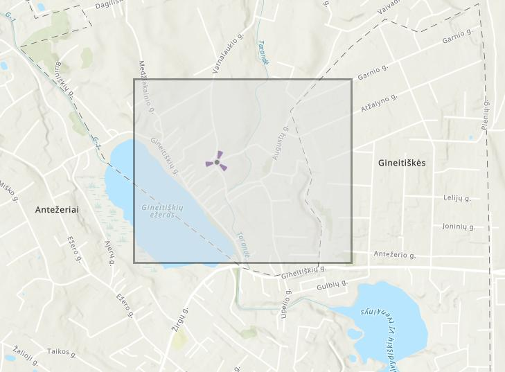
- Review the objects listed in the Features panel.
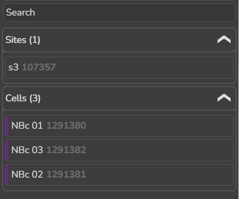
This confirms that cells and sites were successfully created and loaded into the workspace.
Step 3 – Importing Antenna Patterns
Purpose of Antenna Import
Antenna patterns define how energy is distributed spatially. Importing accurate antenna patterns ensures that predictions and analyses reflect real equipment behavior.
Reviewing the Antenna File
- Navigate to: C:\CE_Course\ImportingData\Antenna
- Open the file ADU4518R6v06_2655.txt using Notepad.
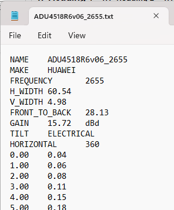
The file is in Planet format and contains: - Header information - Horizontal radiation pattern - Vertical radiation pattern
This format is supported for direct import into CE Express.
Importing the Antenna File
- Open the Antennas tool.
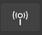
- Click + New Antenna.
- Click Import files.
- Drag and drop the antenna text file into the import area.
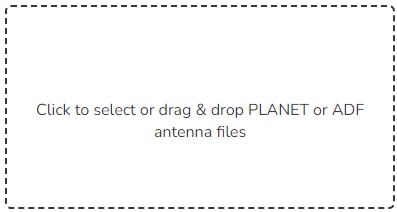
The antenna is automatically added to the CE Express antenna database.
Step 4 - Reviewing Imported Antenna Data
- Select the imported antenna from the list.
- Review antenna properties and radiation patterns.
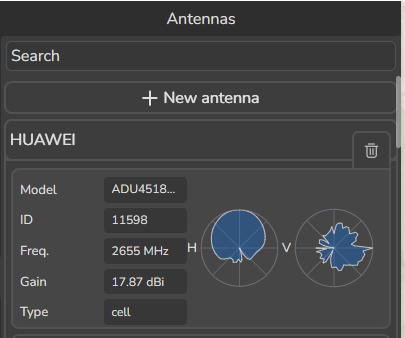
Verifying antenna data ensures it is ready for assignment to cells and use in predictions.
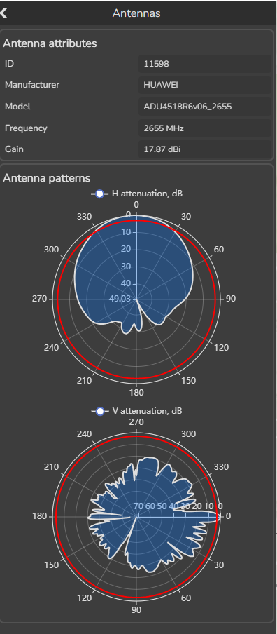
- Close the Antennas tool.
Summary and Key Takeaways
- Data import enables rapid population of workspaces using external datasets
- CSV import with explicit mapping ensures correct parameter assignment
- Mapping templates provide repeatability and consistency
- Antenna pattern import allows use of real equipment characteristics
- Verifying imported data is essential before running predictions or further analysis